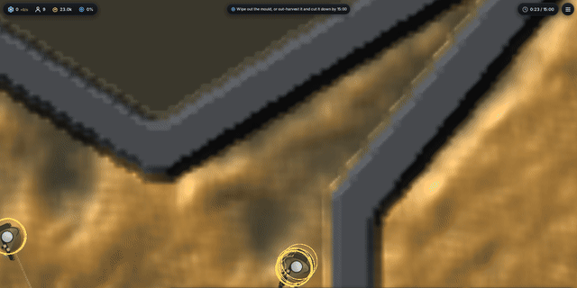
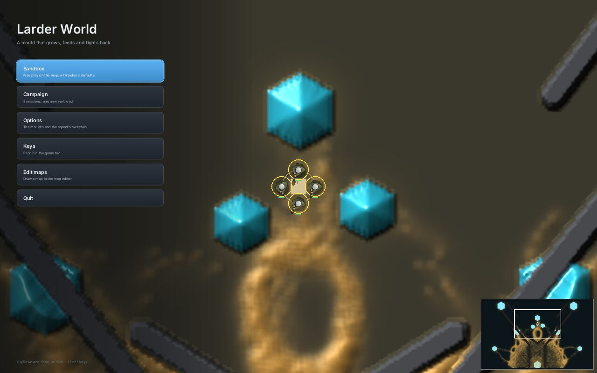

Larder World art review
Main at 7df2182, 14 Nov. The window's own picture made without a window on software Vulkan: Fork map, seed 1, shape C, 1280 × 800. Ten issues, worst first, and the thread that has each.
The look we're aiming for: living light on dark ground. The slime is the brightest, sharpest, most alive thing on screen, and every glow shows something the simulation did.

1The slime is out of focus
At zoom 6 and closer the slime looks like a blurred photo, because its thickness is averaged over 5 × 5 cells and its lighting is sampled 1.5 cells apart. It's the subject of the game, so this matters most.
"The slime looks very blurry/out of focus."
Slime sharpness thread

2Every hard shape has stair-step edges
Rock ridges, walls and crystal faces are drawn from the cell grid, so their edges step every 6 to 12 pixels and carry a black shadow band one cell wide. Crystals that touch rock get cut into odd shapes.
"The crystals are pixelated."
Crisp crystals thread, now covering all terrain edges

3The slime reads as sand, not a creature
Its ochre is close in brightness to the olive ground, and a fine mottled grain covers everything. There are no veins and no wet film, and you can't tell which way it's flowing.
7The ground is flat
Open agar is one dark olive. The engine's tints show up as flat coloured discs that look like UI, such as the blue disc at top left and the orange one at the bottom crystal.
3: slime thread. 7: terrain, after issue 2.

5You can't count your squad
- Soldiers stack exactly on top of each other.
- At zoom 6 a soldier is a 20-pixel olive disc on ochre, mostly hidden by a heavy yellow ring.
- Health bars are 7 × 1 pixels.
- The larder is a plain beige square.
- A dead soldier still looks alive.
4Shots barely show
A tracer is a 1-pixel dotted line, and a hit leaves a soft dark smudge that closes in under a second.
5: a new units and buildings thread. 4: gun rounds thread (PR #219, bullets as lights on the slime).

6The HUD hides the fight
The bottom bar stays full height even when it only says "Nothing selected", and the camera opens with the squad underneath it.
Gun card HUD thread, once its card panel lands

8–10Explosions, gas, menu, editor
- 8. Explosions: the explosion cards thread has a blast that throws live slime outward. Gas becomes a drifting cloud in the gun rounds thread.
- 9. The start menu is clean. Its background has the same faults as issues 1 and 2.
- 10. The map editor isn't on main yet (#209). I'll review it when it merges.
Who has what
| Thread | Issues |
|---|---|
| Slime sharpness | 1, 3 |
| Crisp crystals | 2 (crystals, rock, walls, rubble), then 7 |
| Gun rounds | 4 and the gas cloud |
| Explosion cards | 8 (blasts) |
| Gun card HUD | The card panel, then 6 |
| New: units and buildings | 5 |
The style guide is in the repo at wiki/looks/art-direction.md.